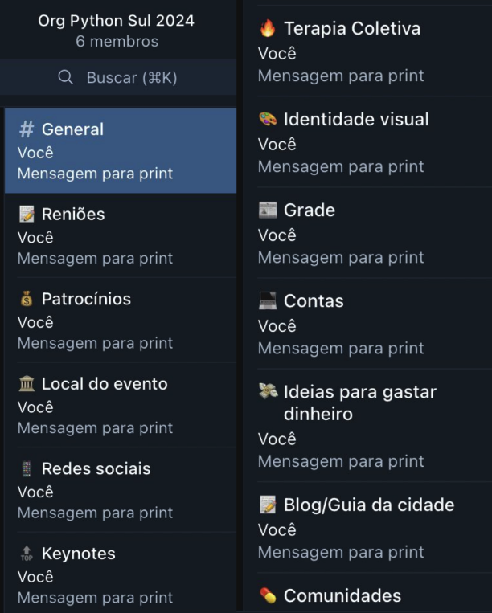
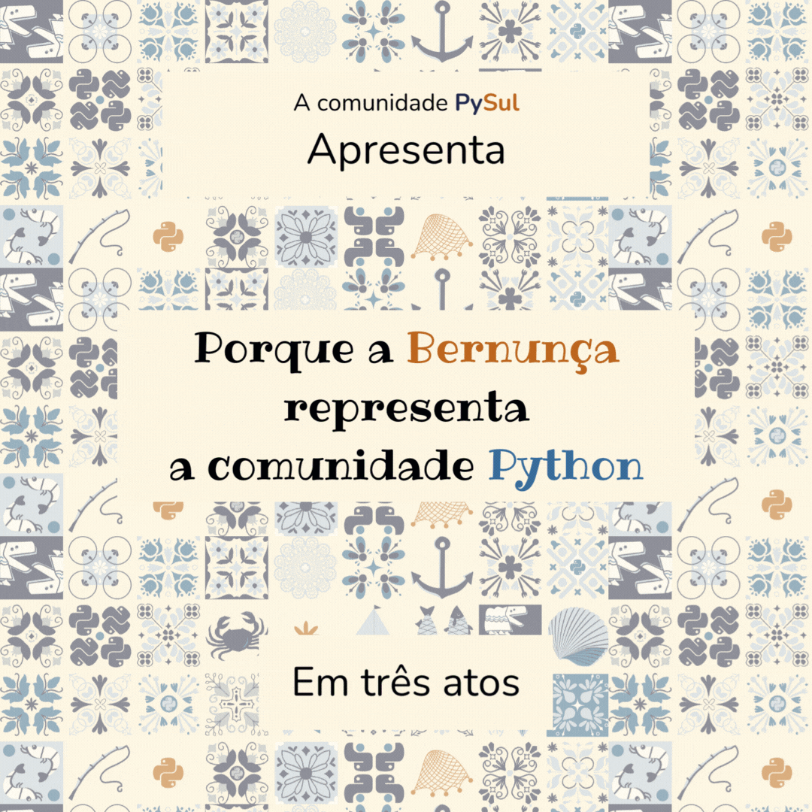
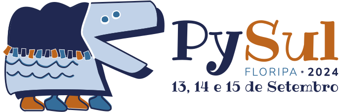

Retro Nov 2023 - Jan 2024
Retrospectiva Python Sul
Nov 2023 - Jan 2024
Bora recaptular?
Primeiramente, essa é a versão blog da apresentação que fizemos na Python Floripa do dia 27/01. Logo, se você já viu, lê mesmo assim 🤎
Ah, o comecinho já foi comentado aqui no blog, mas o resto é novo!
Os boas vindas
Assim como no post de boas vindas, comentei que desafiei a galera do Sul na PyBR que aconteceu Caxias do Sul a encontrar uma sede melhor pra PySul que Floripa.
Os Tópicos
Divulgamos a quantidade de tópicos que criamos no telegram da org da PySul.
PS: Após a Python Floripa criamos novos tópicos 😂
A galere atual
Apresentamos a galere, como no post de boas vindas.
Os Pilares da organização
Nós apresentamos aquilo que determinamos como pilares da organização da PySul 2024:
Confiança acima de tudo!
Ninguém está deixando de fazer algo porque é babaca, e sim todas as pessoas estão dando o seu melhor.
A saúde mental de todas as pessoas estão acima do evento.
Todas as pessoas dessa org já participaram de organizações de evento antes, e sabem a importância de estar saudavel mentalmente para tocar o evento.
E colocamos isso como meta interna, pois muitos já tem CID e não querem mais 😂
Sempre se comunicar caso precisar de ajuda!
Assim como confiamos em todas as pessoas, esperamos que todas peçam ajuda caso precise, pois somos um evento de comunidade, e toda comunidade é uma rede de apoio.
Todas as cobranças dentro da org não são pessoais, e sim para fazer o evento acontecer
Esse é um dos pilares mais importantes!
Conflitos e cobranças acontecem e fazem parte quando todas as pessoas querem o melhor para o evento.O importante é não levar para o pessoal, afinal, nosso trabalho na comunidade não somos nós. É claro que não vale chamar o amiguinho de corno.
O grupo de terapia coletiva serve pra xingar geral, inclusive uns aos outros, e não dar solução para os problemas
Como é possivel ver na foto acima, temos um grupo denominado "terapia coletiva".
Ele foi feito para xingar e chamar para 5min de soco na amizade.
O desabafo e xingamento é uma forma de tirar o peso da pressão que é fazer esse evento acontecer, nós só criamos um espaço para isso.
E é um espaço criado unicamente para xingar, não solucionar problemas.
Teremos um core pequeno de org, porém expansível verticalmente.
Com nossas experiencias, percebemos que quanto mais pessoas envolvidas, mais dificil é tomar uma decisão importante.
O que queremos é que tenha um grupo pequeno de lideres dentro organização que serão responsável por alguns pontos principais do evento.
E essa pessoa lider é responsável por zelar pelo seu núcleo, caso você precise de ajuda, chame!
Mas isso não quer dizer que não iremos ampliar o nucleo de org em algum momento, mas sim que cada "adição" de pessoa no grupo vai ser muito bem pensada.
Afinal, confiança é algo que se conquista, e confiança é nosso primeiro pilar.
A identidade visual
Repassamos tudo o que foi explicado pelos designers no post de identidade visual.
Mas também apresentamos a bernunça de uma forma única:

Como vocês conseguem ver, a Bernunça na dança do boi de mamão é um ser que se multiplica, assim como a comunidade Python!
Os proximos passos:
Patrocinio
A PySul ser um evento barato de fazer, mas isso não quer dizer que não precisamos de dinheiro!
Precisamos de dinheiro o evento acontecer!
Estamos em contato com várias empresas, mas estamos sentindo falta de algumas empresas do Sul do Brasil para somar com nós, você sabe alguma? Você quer doar?
Entre em contato!
Comunidade
A importancia da comunidade
Sem a comunidade, a Python Sul é só um evento de tecnologia,
não é nada de errado caso fosse, mas gostamos do "tchan" que
é o diferencial da comunidade!
Sem vocês nós não existimos!
Sem comunidade, não há palestras interessantes.
Sem comunidade, não há pessoas interagindo com as outras.
Sem comunidade, não há espaços seguros.
O que pensamos em fazer
Com o destravamento de algumas demandas como a data e local, iremos nos jogar de cabeça nas comunidades aqui do sul do Brasil!
Nosso plano louco
A criação de um núcleo dedicado!
Cada vez mais percebemos que tracionar demanda muito esforço, tempo e dinheiro.
Por conta disso, iremos criar um núcleo dedicado para fortalecimento das comunidades regionais!
Org da Python Floripa
Precisamos aumentar a rotatividade da organização da Python Floripa!
Não podemos organizar a Python Floripa e a Python Sul ao mesmo tempo.
Para isso, vamos lançar a iniciativa:
- Palestre na Python Floripa e ganhe um ingresso para a Python Sul!
- Organize uma Python Floripa e também ganhe um ingresso!
Viagens
Atualmente temos o alcance de Floripa, mas logo estaremos viajando em pequenas distancias pelo Sul, espalhando a palavra da Python Sul!
Muito provavelmente iremos para:
- Curitiba (alô comunidade de Curitiba);
- Blumenau (alô comunidade de Blumenau);
- Caxias do Sul (alô comunidade de Caxias);
- Araranguá (alô comunidade de Araranguá);
Evangelização por todo o Sul!
Não conseguimos ir a todas as regiões do Sul do Brasil, precisamos de braços em todos os estados e regiões!
Conhece alguém? Chama a gente :)
Redes sociais
Nós realmente precisamos de ajuda!
Somos um bando de low profile tentando entender como funciona o algoritmo do Instagram.
Ta, mas e a data??
